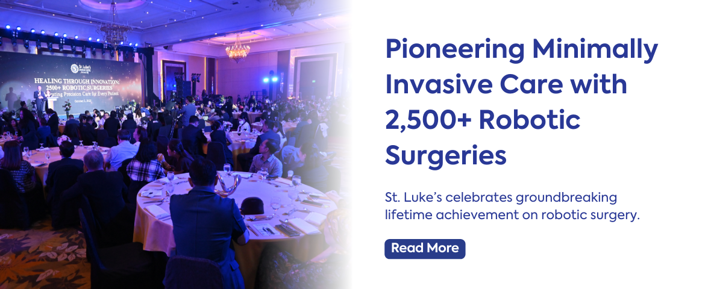

Heart Institute
Advanced cardiac care — from angioplasty and TAVR to STEMI response teams.
Quezon City · Global City · Taguig
The Philippines’ leading and most respected healthcare institution — compassionate, patient-centered care guided by excellence and innovation.
World-class specialties across Quezon City and Global City — from heart and cancer care to robotic surgery and advanced diagnostics.
Advanced cardiac care — from angioplasty and TAVR to STEMI response teams.
TrueBeam Edge radiotherapy, molecular pathology, and multidisciplinary oncology.
Robotic surgery and minimally invasive procedures with shorter recovery times.
Comprehensive ophthalmology for diagnosis, treatment, and surgical care.
Search specialists by clinic location, schedule, and HMO accreditation.
24/7 emergency response with stroke BAT and cardiac STEMI pathways.
From Newsweek World’s Best recognition to robotic surgery and patient stories — a glimpse of St. Luke’s excellence.

St. Luke’s Medical Center is recognized as the leading and most respected healthcare institution in the Philippines. Our Quezon City and Global City campuses deliver compassionate, patient-centered care at international standards — including JCI accreditation and Academic Medical Center recognition.
With institutes spanning heart, cancer, surgery, and reproductive medicine — plus Patient Experience Navigators on hand — we combine clinical excellence with a restorative healing environment.
Quezon City · 279 E. Rodriguez Sr. Ave · Global City · Bonifacio Global City, Taguig
Reach Quezon City, Global City, or the Extension Clinic for appointments and inquiries.
Global City (02) 8789 7700
Quezon City (02) 8723 0101
Extension Clinic (02) 8521 0020 · (02) 8521 8647
Email productinfo@stlukes.com.ph
Facebook facebook.com/StLukesPH
A clearer digital front door
This quotation sample shows how patients could land on institutes, campus phones, and Find a Doctor — without digging through Facebook posts alone.
Email Product Information